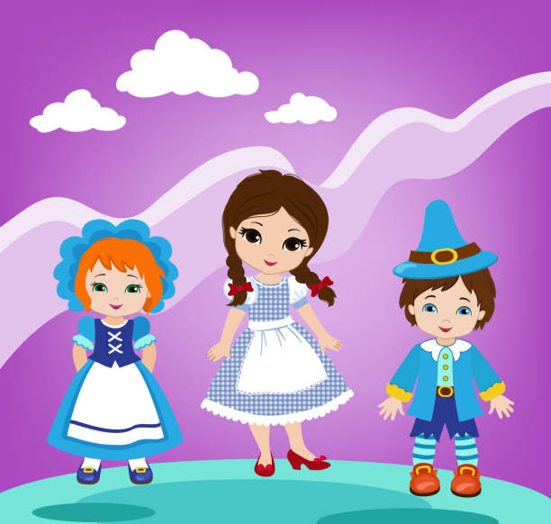

She was awakened by a shock, so sudden and severe that if Dorothy had not been lying on the soft bed she might have been hurt.
The house was not moving; nor was it dark, for the bright sunshine came in at the window, flooding the little room. Toto had jumped out of bed and was sitting by the door, looking intently at it.
Dorothy sat up and noticed that the house was not moving; neither was it dark, for the bright sunshine came in at the window. She sprang from her bed and with Toto at her heels ran and opened the door.
The cyclone had set the house down very gently in the midst of a country of marvelous beauty. There were lovely patches of greensward all about, with stately trees bearing rich and luscious fruits.
While she stood looking eagerly at the strange and beautiful sights, she noticed coming toward her a group of the queerest people she had ever seen.
Image source/license: Public Domain